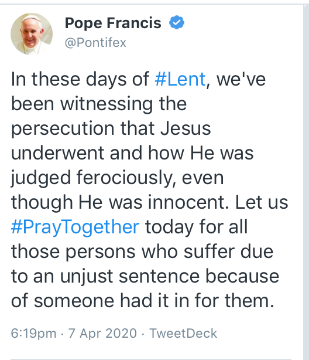

Well, well, well. The legal system has bungled its way to releasing a guilty man. Even if George Pell were not guilty of any acts of child molesting (as it was called during most of the time he was doing it) he'd belong in jail for his criminal disregard and wilful hostility towards the interests of the thousands of innocent children who were abused and whose lives were so devastated as people were shifted from parish to parish.
Having watched Revelation's Episode 3 – remarkably quickly removed from the ABC's iView Website this morning – [1. It reads "In response to the High Court's decision regarding Cardinal George Pell, the ABC has temporarily removed episode three of Revelation from its platforms while updating its content".]it is clear on a host of similar fact evidence that Pell is in fact guilty of the crimes he was convicted of by a judge and jury.
For now, I take a small amount of comfort that the monumental incompetence of this system which has enriched the lives of so many lawyers in the last few years for putting on this dysfunctional show, has engineered a situation where a man goes to jail even though everyone has known there was a good chance he'd be found not guilty at the end of the process.[1. The only case for this would be if Pell was a chance to abscond, but measures can be taken to render the chances of that negligible.]
I'm sure if I asked a lawyer why this was the case they'd come up with a good reason – or at least a reason that satisfied them. It wouldn't satisfy me – it's completely stupid. Perhaps you know that you haven't really made it as a profession if you can't do things that are utterly absurd on their face and have a large number of the trained professionals telling you that it really was for the best and that the system would be much, much worse if it didn't do such utterly stupid things.
Certainly, economics qualifies as a profession if that's the criterion. Professions that have to build things that work – like engineering – not so much.
Postscript: Just tell me about the money. One more thing. At the end of Episode 3 of Revelation the (I think) then most senior Catholic was in Rome for a Vatican gabfest on the crisis of child sex abuse in the Church. He seemed like a reasonable enough guy – but who knows. He'd obviously have been schooled in the PR of it all and he gave some statement to the assembled cardinals (if that's what they were – they dressed in green silken robes and had pink skull caps on – as you do.)
The language had been amped up from the (at least in retrospect) creepy language adopted by so many apologists for the church as these revelations have been processed by the churches. I recall Pell talking about his 'Melbourne' model of solving this crisis talking about 'walking with victims' and all that stuff. (About all that can be said for that kind of stuff is that it's better than the treatment they got in private.)
Anyway, I'm thoroughly uninterested in words from the church. I think we should have a moratorium on them. The only thing that will satisfy me are the words Mario Draghi used to save the Euro – at least for a time. "Whatever it takes". I want to hear senior Catholics say this:
Enough with the words. I am ashamed to say that my church has utterly debased them since this crisis was dragged into the light – with the Catholic Church relentlessly resisting at every turn. 'By their fruit ye shall know them'. Accordingly, I say to you now that my Church is not serious if it does not immediately set about unwinding the labyrinth of the legal structures it has put in place to deny those who have a rightful prior claim on the wealth of the church – the victims of my church's crimes.

Post-postscript: The Pope seems pretty pleased he's got his boy off – all very reminiscent of Jesus really when you think about it.
Bravo Mr Gruen! There are some in our community who not not want Pell prosecuted under any circumstances, and this is an example of how special privlidge can warp one's appreciation of reality and moral values. Religion is, by definition, unconcerned with truth or logic, but regards ritual and belief as "transcending" logic and evidence. People [especially influential, powerful people] did not want Pell [the ex second in command to the Vicar of Christ] to be humbled -the question of guilt or innocence with regard to the charges being totally irrelevant in their world view. I am not saying all religious people are guilty of this total lack of compassion for the victims, or appreciation for justice, but apparently enough are for this evil farce to play out. In this world we are witnessing a pattern, of con-men being elected to be President of the United States, supported strongly by Protestant evangelical. The truth does not matter to them either, they are quite content with Trump the boasting sexual predator, Trump the racist Wall-Builder, Trump the obvious habitual liar. Truth, more than ever before, has become a social construction, rather than something found through evidence and reason. I blame religions [all religions] for habituating the minds of the populations of the world into rejecting critical thinking. Critical thinking is a farce if one hold sacred cows, literal or metaphorical. Where will it end? An erosion of our rights, and a plunge towards fascism. And I think we are nearly there.
Thanks Robert, I can't speak for other religions and am only speaking of my knowledge of Christianity, not from within it, but the Christianity that I respect is a religion of reason, or as I suggested here of 'fictive' reason and the tradition that broughtus science.
Well I always thought that the probability of the alleged offence was so low what in the hell were the Jury thinking. The court of appeal appeared to have thinking backwards ( in a decision that surprised legal academics) so I am not surprised at the high court's decision.
Robert only some so called protestant evangelicals and to be honest not very biblically minded one at that. They are copying what the Israelites and then jews did and should not have.
Re Pell being guilty of covering up and indifference: guilty in buckets.
However Justice Weinberg, the dissenting judge in the original trial is the one with the greatest experience re criminal law ( much more than any of us) and he was always very clear that he believed the majority verdict was unsafe and vulnerable to a successful appeal. https://www.theage.com.au/national/victoria/why-justice-mark-weinberg-believed-george-pell-should-go-free-20190821-p52jaj.html
The appeal was upheld unanimously.
Robert These people are American Christians that might ( peacefully )disagree with you https://faithinaction.org/issue-campaign/economic-dignity/ And Martin Luther King was a Christian.
I am an ex-Christian, and I found the evidence for ANY god totally inadequate. I am a strict secularist, which means I believe in both freedom OF religion and freedom FROM religion. [Freedom from religion is a logical and absolute requirement, when you think about it, for freedom Of religion].
But I digress. The main issue is total separation of "church and state", and churches have far too much influence in our lives. The top priority however should be the safety of children from predators, and the fact of the matter is leading figures in society, such as ex-Prime Minster John Howard, gave a personal and warm character reference concerning George Pell, even after he was TWICE found guilty by the courts.
We have religions interfering in our schools and armed forces, enjoying tax free benefits that other charities have to PROVE, and many other incursions into our public life. Religion means special privilege. But gods are NOT facts in evidence, despite the abundance of buildings and believers. PUBLIC FACTS should only be those claims which have been demonstrated to be true by evidentiary and logical warrant, and epistemically sound. No religious claim has ever achieved this status, if it did, we would all believe exactly the same thing. The sky is not red just because we wish it to be, it is blue. Reality has nothing to do with our wishes, it is what it is.
In short, I question the reliability and lack of bias of religious people as witnesses in these sorts of cases.
Pell may be "technically" found not guilty, but given the fact that many clergy have said that they hold "god's law" above the laws of humans, I have no confidence in the claims that they make. [eg Clergy have said they will defy laws that require the reporting of crimes from information obtained in the Confessional].
Demonstrate you god is real first, then perhaps we can talk. Because nay statement concerning a god uttered in public is subject to question and review. If that is not the case, we neither have democracy or freedom. That is why the Morrison government had such a hard on for the so-called "Religious Freedom" laws, which even many religious commentators thought were unnecessary.
No, the push in society by the elites is about maintaining special privileges, including special religious privileges, which give religious people licence to be bigoted to people like LBGTQI. [Or atheists and agnostics or simply people of the "wrong" religions.
I am not a lawyer so I can't say if the case against Pell was proved or not. But I will make a prediction, that religious special privilege will grow in the light of this decision. Right or wrongly, the legal vindication of Pell's "innocence" will make such clerics insufferable and arrogant, and put our children into continuing danger of being prayed on by sexual predators. I am sorry if some of you who are religious are offended by this, but critical thinking, properly practised, allows no "sacred cows" -literal or metaphorical.
And if we can't protect our children, then we are lost as a society. My 2 cents.
Similar fact evidence makes Pell guilty beyond all reasonable doubt.
The Catholic Church disgorged millions to put their money down in an oligarchic system – millions that could she gone to victims.
It's typical of this system that the trial is set up in such a way to exclude the vast preponderance of evidence that Pell had a weakness for taking advantage of young boys.
To whom is it most just? The accused? Well not in R v Sharpe where the accused wasn't able to admit evidence that the girl he was alleged to have brutally raped had said – before she died that the perpetrator was a white man. (The accused was black.) The prosecution? Well not here. The victim? Ask any accuser in a rape case if that's the case.
It's fair to lawyers who dominate the system and walk away with millions.
Nick,
my take is similar as yours. The willingness of the church hierarchy to neglect the children abused by the church, and to protect the whole system of secrecy and hypocrisy that encouraged it, makes enough guilt in my eyes too. But that is not how the legal system works. The jails would be full of people who had positions of power in Australia if the courts would judge them on the sum total of their conduct in office. Rather it is their opponents who have the most to fear from the legal system. Now more than ever.
We may differ somewhat. I'm not saying that the legal system should necessarily punish neglect and disregard of the criminal dimensions shown by Pell. I think it's obvious that it should considered in some kind of 'utopian' way, but I have a rather sceptical mind as to whether this is too ambitious a task to give the legal system and expect it not to go off the rails in some other way – for instance by being politicised in the way the Supreme Court of the US is.
My observations about Pell's criminal negligence go to his worth and to the worth of the great efforts being expended to spring him from jail. After all, it would be open to a decent organisation to say "we are ashamed of Pell's behaviour and we will not pay $20,000 a day to his lawyer to try to spring him from jail".
What really is infuriating about the legal system is that there is lots of similar fact evidence that could and should convict Pell. Any reasonably objective person who has seen a bit of it would believe Pell guilty. All twelve jurors felt that the accuser in this case was hugely credible. So was the main accuser on Revelation episode 3. I'm not even one of those people who keeps up with the Pell case, but I've seen other accusers who are likewise highly credible.
And just as a 'class action' exists in civil cases, those accused should be able to mount some similar case against Pell in which their evidence can be heard and some conclusion be drawn from it in its totality.
fair enough. We dont differ much, but I do want a criminal system that holds power to far greater account than the current system. Not just in Australia. That would need quite new institutions though.
One such idea is to have a trial of every senior politician once they retire from office where their most important decisions involving public resources are examined and judged. The jury could include former politicians from other countries who have been nominated by their own population as particularly public-minded.
Just dreaming out loud, I know....
Superb Nicholas. The jury's verdict should have stood. One wonders about the competence of our High Court judges when they could not even sort out the citizenship nonsense in recent years. I once interviewed a detective in Perth who specialised in this sad jurisdiction and I asked him how he and his colleagues could be sure that children were telling the truth. He said it was not difficult. This is a terrible day. The Church should never have taken Pell's case to the High Court. The Religious Right will gain strength from today's decision.
Section 44 is a mess because, despite 40 years of inquiries, no government has ever tried to amend it. It is not the high court’s job to amend the constitution when the parliament refuses to act. It is also not the high court’s job to weaken or strengthen the Religious Right.
Paul hopefully the sections of the royal commission report that were redacted because of the trial can now be made public. Feel that the furious focus on one person has deflected attention away from the real institutional crimes.
My dad was a barrister, many of my friend and clients are barristers, what the dissenting Judge in the first appeal said was the view of quite a few dispassionate observers.
One of your worst posts Nicholas. You show a complete disregard and contempt for the legal system. It's not meant to convict people of crimes they didn't commit.
This story really reminded me of dinner party’s during the time of Lindy Chamberlain where I was the only person saying ; hang on, being a member of a slightly strange cult is not a reason to suspend critical dispassionate judgement.
totally agree with Graham.
The Pope is a goose.
Of course Jesus was innocent. That was the whole point.
He both took our sins and as resurrected because he was without sin so anyone believing in him can get to heaven.
The whole thing was God ordained.
Nicholas wrote:-
Um, no, Nicholus. "Science and religion arose from a common ancestor -ignorance". [ A.C. Grayling]. The methods used in science and religion as vastly divergent. Do you here priests, rabbis, imams, etc regularly arguing AGAINST the proposition that god is not real? I think not. In science all propositions are not accepted as even likely to be true unless the evidence demonstrates they are true, and even that claim is tentative, subject always to falsification. "Proof" in religion, is basically about strength of belief, not evidence. There is another problem, with religions-the vast numbers of them. Are they all right, or only one? If someone claims only their own religion is correct, the first, it can't be demonstrated, and second, it is claiming special privilege. Yes, religions have dominated cultures for many hundreds of years, therefore it is no surprise that their influence in academia and science has been vast. For a long time, churches were about the only organisations big enough to found universities. And let's be clear, the history of science shows that when scientific finding contradict the religious dogma of the day, science loses. Bruno, Galileo and countless others found that out to their cost. Religion only tolerate science if they like the answers. That is why when you find HIV researcher's being blocked for funding an AIDS study of sex workers in Africa, it is due to religious morality. The question the researchers wanted to know was: "How African some sex workers seemed to have immunity form HIV-1". The recent proposals for a "religious freedom" law was all about special religious privlidge, not freedom. We know this because in schools and elsewhere people have to opt-out rather than opt- in of religious participation. And they think they are being generous doing that. Religious bigotry is the most common form of bigotry against LBGTQI folks. Yes, there are humanist religious people, I was one of them. But seriously, the hard core, the elite of religions in particular, are bigoted and privileged beyond belief, most of them. And they are infested with sexual predators, as most nuns and children exposed to these monsters can attest.
Same here and most legal scholars thought this was how the Court of Appeal would rule.
The whole thing is the will of god; 'you weren't around when the stars were made, you can't pluck a whale out of the ocean with a fishhook and bind its tongue' - you must simply stand on that mound of broken shards and stare at the beauty and the terror of the shining light of creation.
Robert the term 'religion' is a 18th western European ' Classification' . Outside a western European context it is a meaningless misleading and confusing category. Classic example of how confused 'religion' is as a category is; the Dali Lama is a renowned Religious leader and the Dali Lama is also an avowed atheist.
There are many religious people of all faiths who have good intentions, let me make that clear. And there are faithless people who are bad, and in other news, water is wet. But powerful religions dominate and displace smaller ones-that is a fact. Christianity and Islam in particular. It is part of the colonial process. Did not Indigenous people in Australia and elsewhere have their own religious beliefs? Of course they did, and these beliefs were suppressed, often brutally. Science however, demonstrates that Australian indigenous peoples have occupied and used this land for many thousands of years- at least 60 thousand and probably as much as 100,000 years ago, thus exposing the lie of Terra nullius. And homosexuality. Science tells us that homosexuality is a natural human variation, and variations in sexuality and gender is common in other organisms. Yet what do most religions say on this matter? Yes, there are reformers and progressives in the ranks who think [rightly] that it is unkind and wrong to hold bigoted views of that type, but so what? What I am getting to is private vs public facts. ANY public fact has to be demonstrated to be true, BEFORE it becomes public policy or law. What we actually have in society is a lot of baseless assumptions, be they ideological or religious. Now, there is no absolute path to truth, all we have are procedures, processes and methods to find out what is most likely to be true, and to demonstrate why we think that is the case. Peoples' private beliefs are their own affair. So how come institutional child abuse flew under society's radar for so long? Baseless assumptions is the answer. Because people can't [or won't] think critically about their own religions, people just trusted priests with their children. But a secular educator, like myself, had to get "working with children", police checks etc, and rightly so. I had to demonstrate my fitness to educate the young. Assumptions, untested, leave us all open to exploitation. It is to late after the fact to realise that we should have done this or that-we cannot change the past, but we can't change the future. Only strict secularism will protect our children-and us. When did we stop asking questions and assume answers? If religion X and God Y is true, I would accept that. But unless such things are demonstrated properly, they have no business in public affairs.
John Walker wrote:-
No argument with you there John. Religions do not have to be theistic. But all religions have non-demonstrable claims. Reincarnation for example, or the concept of the disembodied soul. Spirits, ghosts, etc. And strictly speaking, an atheist is literally someone who lacks a belief in ANY deity. But disembodied souls, spirits, reincarnation, ghosts, etc enjoy no more support in evidence than gods. So that is where the Dali Lama and myself part company as atheists. So I have not been inconsistent or contradictory, but you were right to point out that not all religions are theistic, whcih I think is fairly common knowledge.
Robert
"ANY public fact has to be demonstrated to be true, BEFORE it becomes public policy or law."
And
"Now, there is no absolute path to truth, all we have are procedures, processes and methods to find out what is most likely to be true..."
Just a bit of a contradiction , no?
And re "Only strict secularism will protect our children-and us." The school I went to :Sydney Boys High had a notorious sadistic-sexual pedophile teacher who somehow operated in the school for decades. In fact it only ended when he committed suicide while facing yet more police charges.
I am just wondering how a poor person of colour, perhaps not of a popular religion, or having no religion, would fare in a court of law when accused of a similar crime that Pell was accused of?? Just curious.
Alan, With a Church and a High Court like this, the corona virus is the least of our problems. The jury was the best placed body to judge Pell's guilt or innocence. It was a dark day for Australia and for the world. The court kicked thousands of the Church's victims in the teeth. I hope their lawyers are not discouraged and they succeed in destroying the Church financially, which appears to be the only way it will be reformed.
I’ve been writing and saying deeply critical things about Pell since he first became prominent. However, with the greatest possible respect, Nicholas, your use of the phrase ‘similar fact evidence’ is just using legal sounding language in a completely non-legal way to try and get around the principle of innocent until proven guilty. There is no exception to the principle of innocence where the defendant is unpopular or even repugnant.
Two juries disagreed on this evidence. Ten appellate judges have considered the same evidence and eight of them have concluded that the evidence didn’t support conviction.
There were identical reactions to the Lindy Chamberlain appeals, as the dissenting judge noted in the Victorian court of appeal, although ultimately she was completely exonerated. There are even websites out there now that continue to argue Chamberlain was guilty.
When the Central Park Five were exonerated, Trump famously said that they were guilty anyway and whatever they did was bad enough to justify execution. How would you distinguish your opinion from Trump’s?
A decent regard for the rule of law requires we at least wait for the reasons to be published before ripping into them.
I’m actually quite uncomfortable, precisely because of reactions like yours, with the absence of juries in appeal cases. In France the appeal courts, the cour d’assise in each département, now sit with a jury and cannot overrule a jury verdict without a decision by a fresh jury. That’s the first example of an appellate jury in the world and we should emulate it.
John wrote:-
No, it isn't actually. it is practically impossible to be omniscient, except in very limited circumstances. Say I have a small bag of marbles. I take them out and count them, one by one. As it turns out there are 27. You can replicate my count, and agree, that there are indeed 27 marbles in the bag. OK, what about a bigger bag of marbles. Let's play god and say there are 547 trillion marbles in the bag. We would both die before we finished counting them. But of course we could estimate them. If we could weigh the bag of marbles, and we knew the mean weight of each marble, then we could come to a reasonable estimation about the number of marbles with a large scale and a pocket calculator. Such would be a true estimation. Of course, the marbles may not all be the same size, etc, but we have a good and demonstrable idea of how many marbles they are. Scientists call that "working knowledge". The point is, our knowledge can be demonstrated to be true, according to the procedures used. They might not be perfect. But good enough for most purposes.
So OK, how do you demonstrate a god? One way might be by "his" "productions". Does god answer prayers in a predictable way? Is god a driver or THE driver of natural events? Does god interact with nature at all?
Of course, there is a dodge to this type of god-the deist god who is claimed to have existed but does not interact anymore, or no longer exists.
So what about god and "miracles"? Miracles are by definition, the suspension or contradiction of natural law. People who rise from the dead, feeding thousands with a few loaves and fishes, and so on. I can't claim that such things did not happen [though I think they are highly unlikely] so I can't demonstrate that they did not happen. If they happened NOW, then that is another story. But so far, nothing of that kind happens. If things like that did happen randomly but frequently, science would be impossible. Science constructs models and tests them. In other words, successful scientific models make good predictions. In other words, nature is predictable, which does not help the case for arguing that miracles happen.
So in science the answer is not nearly as important as the means we use to get those answers. If the methods are flawed, we try again. It is an interactive process. Plus, science is very specific with its predictions. Basically, science tries to test ideas to destruction. What is left may not be truth, but it is useful information.
How is any religious prediction useful? Yes, undoubtedly, the second coming of Christ is a comfort to many. But noone know if, or when he is coming. Plenty of people claim to do so. But noone so far has made an accurate prediction. So the claim is basically useless from an informational point of view. Which is probably why most governments to not weave it into their public policy.
Indeed, one wonders how many victims will now come forward? Of course, women who have been raped have experience this routinely. But perhaps the law is not the main thing that has to change. It is culture. People need to ask questions, and demand answers. One question we need to ask is should we vote for a man that forces bush-fire victims to shake his hand? He brings coal into parliament, in a world where both the demand and price for coal is dropping. Yet he funds a foreign owned mostly robotised coal to the tune of 4.4 billion, stolen from NDIS funding! Morrison think leadership means dominance, he is a "shirt-fronter" just like Abbot, and we saw this in the pre-election debate against Bill Shorten. And he thinks the world of Trump, that wall-building bigot who was elected into office despite the American people seeing footage of where he bragged about assaulting a women against her will? And the illustrious Barnaby Joyce, who preaches endlessly to the public about family values, but has a mistress and a kid? Not much leadership there either, just moral hypocrisy. The mass media is no help, in fact it fuels the spread of faux news. Like the "good family man" who just "breaks" and commits murder-suicide. This is special privilege coming home to roost. Patriarchy. Few see it, and even fewer care, but they are so surprised when the world goes to shit.
Thanks Alan
The reasons have been published and had been published when I wrote the piece.
I think you are thinking that my points go principally to the conduct of the High Cout. I think there were plenty of ways clear for the judges to do justice. After all, three of the four justices that had deliberated on the matter before the court found a pretty respectable way to do that. I know one of them – Chris Maxwell from law school and he's a very serious, thoughtful, intelligent persons and as straight as a dye. If I had to be tried, or go to appeal I'd want to go to him. He takes the rule of law seriously. So does the author of this article who argues that Pell got off on a technicality – which seems right to me.
But my main comments to to the legal system. It's thrown together at a distance of fifty paces. Things don't make sense. It's my belief in the rule of law that makes me so utterly appalled that we incarcerate people who present no risk of absconding before the appeals that are being heard and that may reverse the verdict are over.
In a system of that degree of elementary idiocy, I'm less respectful that all the rules – rules of evidence most particularly – really make sense.
In particular, it's obvious that in crimes like this evidence will be scarce and fragmentary. Yet, a dispassionate appreciation of all the facts – the facts that would come before many European courts – is that the particular crime of which Pell was accused and found guilty by a jury, was of a piece with the kinds of crimes he was accused of by equally credible witnesses.
So while the judges had a way to find a just verdict, my main criticism was to the profession as an institution – hence my comments about economics. Both of these disciplines have their strengths of course – a lot of very intelligent people make their lives in them. And at the same time they do utterly, unforgivably stupid things.
The macro-models used by economists to model the economic cycle with a view to regulating the financial sector and setting monetary policy had no financial sector. Most still don't.
And our legal system can't figure out that it's unfair to lock people up before appeals on their conviction have been heard. And if there's insufficient evidence on a wide range of heinous alleged crimes, all quite similar to each other, they won't let that evidence be heard and so the guilty go free as they did yesterday.
Ac grayling is notoriously inaccurate historical writer. See for example the recent discussion here.
In Grayling's Age of Genius he simply declares anyone he likes an atheist, even though there is strong documentary evidence that most of his characterisations are wrong. We live in a Keplerian universe, not a Galilean universe, naturally this leads Grayling, with his customary sharp insight, not to notice that Galileo insisted on circular planetary orbits that a re incompatible not only with Kepler's laws of planetary motion but with the Newtonian system itself which was built on them. Grayling even manages to defend Galileo's theory of tides which was disproved by Gassendi within months of being published.
The actual position of historians, as described at the Stanford Encyclopediaof Philosophy is quite different:
The conflict model is not only bad history, it was part of a racist polemic against people from Ireland and Eastern Europe who threatened the political dominance of the Protestant elite. It even recycles quite a lot of Stuart court propaganda originally reacted against evil Papists and conveniently repackaged as historical fact.
That's a more elegant attempt at an end run around the principle of innocence, but that is still all it is.
Do you mean the first jury which failed to convict or the second jury which did convict? Should courts in the US have refused to set aside the notoriously racist verdicts of southern juries during the Jum Crow errand the Civil Rights movement?
Yes, well I didn't bite previously regarding your comment that I was being careless about Pell's innocence. I don't think I'm being careless about his innocence. There was a case I learned of in law school where a man was on trial for murdering his wife. She died in the bath. The court admitted as evidence that his previous two wives had died in the bath. That secured a conviction when, without it, he could presumably have had a good chance of escaping justice on the grounds that his crime hadn't been proven beyond reasonable doubt.
In this case:
1) Twelve ordinary people having listened to the victim and being given the task of satisfying themselves beyond reasonable doubt found that he was guilty.
2) They did not hear the evidence from about eight other witnesses that Pell had done to them what the witness claimed Pell had done to the witness.
3) That satisfies me that Pell was guilty of this particular crime beyond reasonable doubt according to law.
4) I expect that similar fact evidence would be admitted in some European courts – but I may be wrong about that and can't quote chapter and verse. You may wish to consult this article which speaks of:
Note further this comment "Think of a person on trial for rape who has a long history of violent sexual encounters for which he is not presently charged."
5) I have always thought the law of evidence
Given the paucity of evidence in a case like this, it makes perfect sense to allow such evidence and, only to exclude it for carefully considered reasons that are sensitive to the tradeoff between the availability of evidence and justice in the specific situation in the case. That we haven't done so shows from whose perspective the whole game operates.
Thanks Graham
Perhaps my comments in response to Alan might be of interest to you.
Where is Ken Parish when we need him? :)
Btw, if anyone wants to reply to this, it might be better to reply in a new 'comment', as this thread of back and forth is being pushed over to the right margin of the page.
It's also a mess because the High Court has adopted a very impractical interpretation. It is the job of supreme courts to try to make the principles embodied in constitutional rules workable. There are plenty of legitimate ways to interpret S44 and the Court doesn't seem to have adopted a very practical one. John Quiggin has written persuasively on this.
1. The reasons have not yet been published. The summary states, at the foot of the document:
Yikes, messed the format up completely.
I’ve written quite extensively at The Conversation on how I think the section should be changed. Modern constitutions give the courts clear directions on interpretation. An example is South Africa:
We have a rather old constitution that does not give the high court the role you describe. The s44 imbroglio has not been helped by the high court taking an extremely formalist view of the matter. I was impertinent enough to point out to one justice that if s44 applied to the high court, his own position would be in doubt.
And of course part of our very old constitution is that we are the only advanced democracy without a bill of rights.
The age of the alleged offences certainly did not give prosecutors an ideal base to work from. An ideal situation [from a legal standpoint, not for the victims] would have been the finding of semen in the boy's mouth's that matched the DNA of the accused. Then it would all have been cut and dried. No question, it would have been statutory rape. [By definition, even in the wildly unlike case that the boys gave their consent, because minors are deemed incompetent to give consent]. However, the law seldom can act under such ideal conditions of evidence, so I agree with you Nicholas, some evidence of the accused's history was indeed germane to the case, but excluded. On the other hand, consider a sex worker. Their "histories" are used and admissible in rape cases. Or if a woman wears a short skirt, or flirts. The defence will often use these tactics to get a rapist off the hook. So I can see where "history" can be deemed inadmissible because it prejudices jurists opinions against the victim[s]. The victim's "history" can be used to intimidate and undermine their testimony. But in the case of the accused? A pattern of a particular offences is not absolute proof that a particular offence was committed, but when combined with other evidence, does not leave reasonable doubt. But all this goes well beyond Pell. If the churches were really all about fairness, love, etc, they would not indoctrinate children. Let's have an "age of consent" for minds as well as bodies, and see how the churches fare with converts once a person is adult, and educated. They are supposed to be moral leaders, at least that is what they are always telling us.
There are bigger issues than ‘one man’ . The redacted sections of the report of the Royal Commission into Institutional Responses to Child Sexual Abuse ,hopefully can now be made public. We will see, but something like ‘ accessory after the fact ‘ looks possible.
St Patrick’s in Melbourne has already been vandalised - expect that Pell will need spend the rest of his days in ‘safe locations’ and the last few years must have been an ordeal. Possibly about the right amount of punishment for a failure of ‘due care’?
Alan, please tell me where I uttered the "conflict model"? I did not, I made a single quote from Grayling, and you have built up a huge straw man against something I did not say. What I did say was that the sciences are better at obtaining information that has better epistemic , evidential, and logical warrant than what can be found in religions. This warrant arises out of procedures and methods which include, repeat-ability, fallibility, null hypothesis testing and all the rest of it. The conflict [if there is any] does not come from science. It comes from religion. All science does is investigate natural phenomena. The trouble starts when a religion has already made a claim on something like the origin of life or the universe, and science supplies an answer, based on all the evidence available. There is absolutely nothing wrong with claiming that god created the universe or life or humans. But a claim is just that. It contains no information. Charles Darwin made the claim that organisms evolve and diverge, mainly by natural selection. It was a demonstrable claim. It is a claim that has been demonstrated. So what about a claim that god created the universe? Fine. First, demonstrate that god exists, that it has the power to do something like that, and did in fact do something like that! No one 'yet] has been able to demonstrate even part of that claim. If people want to claim that religion and science are equal in value [ie non-overlapping magesteria] as the late SJ Gould put it, then they need to start demonstrating their claims. A final thought. How do you think it is that anyone [given sufficient training and aptitude] can do good science? Christians, Muslims, Hindus, Jewish folks, atheists, agnostics, everybody. Why, because they agree on the methods and procedures of science. It is all about methodological naturalism. One leaves one's beliefs, be they religious, political, ideological, outside that lab door. It works. Religion has yet to come up with such a scheme, be it theistic or not.
I've reproduced your comment below. I'll return to it when I get time.
Alan's comment above reposted down here for legibility
1. The reasons have not yet been published. The summary states, at the foot of the document:
I took these to be the full reasons.
Very funny
I'm sure the victims' groups would be most impressed with your reasoning.
They'd all be asking themselves how they can stand before the Crucified One and us ask for the grace to live in order to serve
They'll be thinking life is a gift we receive only when we give ourselves away, and our deepest joy comes from saying yes to love, without ifs and buts
Just a few tips I picked up from @Pontifex
Have to agree with “Alan” – evidently a lawyer – with what he says about Nicholas’ use of the phrase ‘similar fact evidence’. As a lawyer also (although criminal law is not my field of expertise), let me just say that there were and are several big reasons why Pell’s apparent propensities were not able to be raised in the trial at issue here – or in any other past or future one.
Nicholas is quite correct, however, in sensing that what I’ll term “small-j justice” does not seem to have been served by the High Court’s recent ruling. The strategy used by Pell’s big-ticket defence counsel – in not calling *any* witnesses in his defence (not Pell himself nor anyone else – anyone!) – is noteworthy here.
This defence-side tactic was effectively (and very successfully, as it turned out) to force the prosecution side to overload its slate of witnesses, particularly with two key Pell underlings, plus twenty-odd various peripheral characters, the former (at least) of whom were often in purring agreement with defence-counsel Richter in his so called cross-examination of them during the trials.
As to how this topsy-turvy state of affairs arose is not quite clear – but the High Court judgement plainly endorsed it, with a generous interpretation of the 1983 High Court case Whitehorn v R, which quashed a child sexual assault conviction because the prosecution had failed to call one key witness (the child complainant).
In Pell’s case, the prosecution could and did, to some extent, have some witnesses declared hostile, but my impression is that they should have called-out the defence’s strategy in a much stronger, more “appeal-proof” way. As far as the jury were concerned, they presumably saw through the peculiar defence strategy as complete BS (and predictably so, I think), but this was all a calculated risk for Pell, his backers and their hired-guns – as long as the *appeal* would be a walkover, the jury’s decision barely mattered. And even if the first appeal faltered, the High Court would inevitably beckon.
Interestingly, because I didn’t follow the case closely at the time, the only way that this particular defence tactic came to my attention was because of the majority joint judgment of Chief Justice Ferguson and Justice Maxwell in the first (Victorian Supreme Court) appeal, which I just read earlier today. That judgment comes as close as you are ever likely to see (in the much-restrained language of these things) to calling this defence tactic “complete BS”. A similar, and related, raised-eyebrow can be observed regarding the almost comical convolutions by Pell’s defence-counsel during the two trials, about whether or not they were claiming an “alibi” for Pell, particularly as to the sum-total of the evidence of the two Pell underlings.
Notably, both Justice Weinberg’s dissenting judgment (in the Victorian Supreme Court appeal) and the High Court judgement are silent on the defence tactic here (the High Court, but not Justice Weinberg, also declines to even mention the “alibi” word that so struck Chief Justice Ferguson and Justice Maxwell). Because of these feints, the 7-nil appeal (or 10-2 appeals plural, as “Alan” puts it), could appear be a walkover, legally speaking, but as I’ve already said, in the bigger picture, I’m completely with Nicholas – this result is a travesty.
Finally, back to “Alan”, I’m intrigued by your mention of “writing and saying deeply critical things about Pell since he first became prominent”. Could you direct me/us to one or more of these public utterances, please? Overall your comment seems to back Pell to the hilt – and while I doubt that your few paragraphs could possibly be as Machiavellian as Pell’s counsels’ witness-switcheroo strategy, it does have a suave incongruence to it which has me firmly raising an eyebrow.
Forgot to clarify, in above comment, that the prosecution were presumably well aware, that if they "missed" calling a witness, Whitehorn v R could be brandished against them.
Thanks Paul
I use the term 'similar fact evidence' to refer to similar facts in other situations. It is intended to describe – refer to those facts and the fact that, in a case in which evidence is extremely scarce, they were ruled out as completely beyond the pale.
This is a claim about what the law of evidence should be in these cases. So I'm at a loss as to what your's and Alan's critique of "Nicholas's use of the phrase ‘similar fact evidence’" entails.
If you'd like to address the substance of my point in terms other than "that's the way we do things in our system", that would be most welcome.
Glad you clarified – it was a little unclear before you made that point.
Nicholas You start and finish, over and over, with the assumption that Pell is guilty of childmolestation. The court process ended up with on balance with something like ‘not proven’. Let it go.
You have argued nothing but the conflict model since you began posting in this thread, although you have not used those words. You chose Grayling as an authority, not me.
It is hard to imagine a clearer exposition of the conflict model than the statement Science and religion arose from a common ancestor -ignorance.
Childmolesters are typically compulsives I.e. both bad and mad.
If someone who is not mad and bad , chooses for the ‘sake of the institution’ or job advancement etc , to cover over the bad and mad then that person is I feel guilty of a even greater sin than the actual child molester .
BTW I am myself a survivor.
Nicholas, re your query, I have no wish to get into a technical debate about the legal (and/or lexical) complexities of ‘similar fact evidence’. I was merely endorsing what “Alan” said (that you were using the phrase as “legal sounding language in a completely non-legal way”). As my point of clarification above, plus your response, perhaps attests to, the law of evidence is a large field that has many traps for beginners (of whom I’m also one, more or less, certainly compared against Pell’s hired-guns).
Perhaps I shouldn’t have made the criticism at all, Nicholas. To be clear, I thought that it was a small correction in toto – and done more in a “Mate, your fly’s open” public-service spirit than as a split-infinitive (say) piece of pedantry – but your use of the phrase is, from a lawyer’s perspective, somewhere between naïve and nonsensical (please just trust me on this). While I understand (and, I stress, *agree* with) where you’re coming from as a non-lawyer, I fear that most other lawyers would cut you no such slack (and if you can’t just trust me on this, this time I’ll be happy to argue, to the hilt, an “against” case to the proposition that most lawyers are polite to, and tolerant of, perceived bush-lawyers).
John
You can impute motives to me if you like. I deny them.
What I do think has been clearly proven over decades is that Pell has demonstrated to the world again and again that he put his own interests and those of the church ahead of the interests of its flock.
Yes, my point in response to your previous comment.
On your last comment, my sympathies. I'm very sorry to hear it.
Nicholas This morning had a vision of a bunch of people, mostly male, gathered in a ‘temple’ chanting reifications such as GDP and productivity indexes and performing strange formal calculations and then somebody who looked like Paul turning up and nailing a thesis to the front door.
Though its not Pell's religion which has got him off but his knowing the right people. A humble parish priest would (rightly) have had to serve that stretch. Not so the sort of person who can get character references from multiple ex-PMs.
The first context in which I ever heard Pell's name, many decades ago, was in a story about his doings in Ballarat. It's bad enough that one victim is not believed but when so many have spoken out at considerable psychic cost ...
You just don't understand the rules of evidence DD
If you did, if you were a lawyer, it would all be clear to you ;)
As I'm arguing about what the law should be, not what it is – which is clear in any event as far as this case is concerned. So it's not clear to me why lawyers practising in the area are due the deference on the matter you're suggesting.
As I indicated, I was interested in discussion on the merits.
“What I do think has been clearly proven over decades is that Pell has demonstrated to the world again and again that he put his own interests and those of the church ahead of the interests of its flock.” Agree and that to my mind is a much more serious sin. As for myself the perpetrator died many many decades ago, he doesn’t define me and I forgive him.
I see a thread of doom occurring.
DD it could not have happened to a parish priest. Only an Archbishop. I am not a Catholic and know that.
I am in the peculiar situation of not liking Pell but believing he was not guilty.
Let us get down to tin tacks.
Two boys said sexual assault occurred to them. This would take quite a bit of time.
I will only go to two reasons to have doubt.
It occurred in a room where the door is open and people are regularly going hither and thither. Yet on this occasion no-one passed the room for say at least 10 minutes. Highly unlikely
There is a great tradition in the Catholic denomination of what an Archbishop does on occasions such as these. Pell was the Traditionalist traditionalist. Yet on this occasion he completely and utterly ignored this.
No-one but no-one has any memory of Pell doing such a thing. Again highly unlikely
Remember there are but two
Ergo he could not be found to be guilty beyond reasonable doubt.
This was why a number of legal scholars were surprised by the trial in the first place and why they thought the court of appeal would go the other way.
I’m not a catholic but to this Anglican the proposition that any senior priest ,after mass would not be ‘having a cup of tea ‘ with important parishioners - would instead be out of sight, simply unbelievable.
I a disappointing. I did so want this to be a thread of doom.
Alas it seems I was not wrong. on both on the thread and on proving beyond reasonable doubt.
The following seems to the reason why the High Court ruled in Pells favor and its not a technical legalistic reason:
"In one exchange with Victorian Director of Public Prosecutions Kerri Judd, QC, Justice Patrick Keane said the church had firm rituals around Mass and its aftermath.
Justice Keane said the evidence of Monsignor Charles Portelli, St Patrick's master of ceremonies, that Cardinal Pell would chat with churchgoers outside the Melbourne cathedral after a service and would be with another priest at all times had not been challenged.
"In terms of the way the case was run, " Justice Keane said to Ms Judd, "it was not open to the jury to take the view that Monsignor Portelli was not there.
"Monsignor Portelli gives evidence of a couple of practices that exist ... but he cannot recall that there was any particular exigency that caused a departure from the practice.
"Is not the evidence of practice, where it is honestly given, usually regarded as powerful evidence?"
Ms Judd could barely get out a "yes, but" as Justice Keane rolled on.
"I mean, I can say I shaved last Friday, not because I actually have a specific recollection of it, but because it was a workday and I shave on workdays."
High Court watchers have come to regard Justice Keane's interventions as crucial because they invariably go to the deciding issue. In this case, it was the rigidity of the rituals attached to the solemn Mass and whether the prosecution had proved there had been any deviation.
In other words, if they couldn't create any doubt about whether Justice Keane had shaved then it would be accepted that Justice Keane shaved. Or that George Pell had been talking to churchgoers when the complainants claimed they were assaulted – and had not been left alone after the Mass."
Nicholas, a delayed reply to your invitation to “address the substance of my point in terms other than ‘that’s the way we do things in our system’”.
I agree with you that the outcome of the George Pell appeal before the High Court reflects poorly on the legal system as a whole. I don’t agree, however, that all lawyers can be tarnished with the same brush – many paedophiles, including dozens sheltered by the Catholic Church, are currently in jail thanks to our legal system, and in particular, its lower and middle echelons.
At the top end of our legal system, there is indeed an ethical vacuum – but this is equally true of the Big End of everything else in Australian society, where (with rare exceptions), money talks, and everything else is window-dressing.
In Pell’s case, he appears to have had access to almost unlimited private # funding to prove his “innocence” (his legal bill would be in the tens of millions). Shining a light on how this “distortion” (to use an economist’s jargon probably incorrectly) came about seems to me a more productive exercise than criticising overpaid lawyers (and yes, I hate them, along with everyone else, but there’s no art or skill in knocking off easy targets).
# The last time the Catholic Church paid Pell’s legal bills was when he was before the Royal Commission.
Also, right now I’m concerned that there is a growing media backlash against some very specific, and definitely *not* overpaid lawyers (and police) – the Pell prosecution team. While this is just business as usual for the Murdoch press, this article today by (ex-Murdoch) journo Chip Le Grand is especially odious.
The reason why it so stinks is that (to recap and summarise my comment made yesterday), Pell’s prosecutors were dealt a dud hand very near the beginning, maliciously so in my opinion. For the High Court to pronounce that the evidence of two key Pell underlings was “unchallenged”, when these witnesses at the start had been imposed upon the prosecution as their own, so hamstringing every subsequent prosecution move, is an exquisite irony. Think of a soldier being reprimanded by an officer for not saluting, when associates of that officer had cut off the soldier’s arms a year earlier.
The High Court can – and indeed, *must* – generously be presumed to have not known this backstory, that the key evidence wasn’t so much “unchallenged” as “unchallengeable”. Chip Le Grand’s attack on the prosecution team today, however, needs to be called out by lawyers en masse, as a despicable sledge on, and threat to, lawyers doing honest toil in the public interest.
Of course now that it has succeeded and got itself a wonderful precedent this "we call no witnesses" strategy is now going to become popular, at least among defendants who can afford SCs. R vs Pell (2020) is going to get a lot of cites.
Yet another thing the HC failed to take into account in its rush to judgement.
When I first heard the allegation against Pell I thought it sounded unlikely that anybody would take such a risk in the time and space but then women inside the Catholic Church reminded me of the arrogance of power. The High Court should not have granted leave to appeal. The Pope's comment is disgraceful. Now the Pope, the Court and the Cardinal are swimming in the same excrement at the bottom of the barrel.
I've been restraining myself for days from suggesting that for an economist to argue: 'First, let's shoot all the lawyers' shows a limited sense of professional self-preservation. Now my resistance has broken and it's entirely your fault.
It's not just a much more serious sin, but it is or should be a much more serious crime. I'd be a whole lot happier if Pell and others had been charged for their institutional crimes.
:-)
Dear 'Paul Watson'
When you find a way to express yourself in a less sneering manner I will be happy to accommodate you.
For the record I am not a lawyer. I do care about about human rights including Article 11 of the Universal Declaration of Human Rights. As does Witness J.
When it comes to similar fact evidence, do the facts have to have passed the test of being found to be true in another criminal case?
In my understanding the answer is 'no' and it's hard to see it being much use if the answer was yes.
In the case of the man whose three wives died in the bath, he couldn't be proven guilty beyond reasonable doubt for the first – or even evidently the second. …
So when does an assertion qualify as a fact? Should it be called similar assertion evidence?
Strictly speaking, I think it should.
All things taken as fact in court cases as in science are assertions with a degree of credibility to them.
Would you admit the evidence that the man's two previous wives died in the bath?
Presumably the evidence of the third death would be a death certificate. Establish the first two in the same way.
Death is a unambiguous thing. The cause of death may be ambiguous and the time of death can be inexact, but the fact of death is not. It either happened or it did not happen.
They could use you in debates about whether Jesus, or Socrates existed.
I think we don't have the birth or death certificates there either.
Alan going off reports, it seems the RC findings are damming re Pells role as a senior organisation man who knew about awful crimes against children , but did not as a first priority,act to protect those children . Are there charges that could be laid as a result?I hope so.
if there’s insufficient evidence on a wide range of heinous alleged crimes, all quite similar to each other, they won’t let that evidence be heard and so the guilty go free as they did yesterday.
I strongly disagree as a mischievous party could ride on the back of a previous allegation to set someone up. Blackmail would also forever be on the cards under what you propose. I have a stalker (my wife's ex-boss) who would love what you're saying.